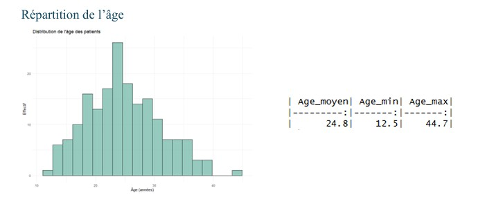
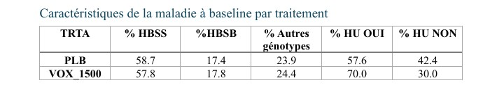
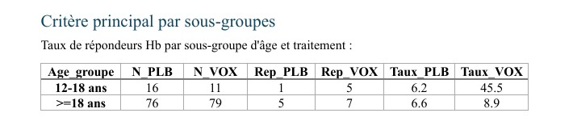
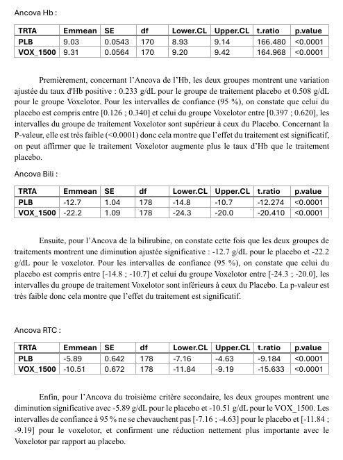

Contexte et objectif
Lors de ce projet, j'ai réalisé une étude statistique complète portant sur l'efficacité du Voxelotor, un traitement oral destiné aux patients atteints de drépanocytose — une maladie génétique provoquant une anémie chronique et des crises vaso-occlusives. Ce travail, effectué en binôme, consistait à reproduire le type d'analyse pratiqué dans le cadre d'un véritable essai clinique de phase III, en suivant strictement un Plan d'Analyse Statistique (SAP) fourni.
L'étude s'est déroulée sur plusieurs mois, de septembre 2025 à janvier 2026.
Données
L'analyse repose sur deux bases de données principales : subj.csv, contenant les informations démographiques et cliniques de 182 patients (âge, sexe, génotype, utilisation de l'hydroxyurée, groupe de traitement), et follow.csv, regroupant les mesures biologiques longitudinales relevées sur 7 visites, de la ligne de base (baseline) à la semaine 72. Cela représente plus de 1 400 observations portant sur l'hémoglobine, la bilirubine, les réticulocytes et les crises vaso-occlusives.
Ce que nous avons fait
Ce projet a été entièrement réalisé avec le logiciel R, depuis la préparation des données jusqu'à la rédaction du rapport d'analyse final.
La première étape a consisté à importer, nettoyer et fusionner les deux bases de données. Par la suite, j'ai créé l'ensemble des variables dérivées nécessaires à l'étude : la valeur de référence (baseline) par patient et par mesure — calculée comme la moyenne des visites "Screening" et "Day 1" ou, à défaut, comme la première valeur observée —, la dernière valeur disponible à la semaine 72 (W72), ainsi que la variation entre ces deux points. Enfin, j'ai défini le critère principal binaire (RESP_HB1), correspondant à une augmentation de l'hémoglobine supérieure ou égale à 1,0 g/dL.
Concernant les analyses descriptives, une étude complète de la population a été réalisée : répartition par sexe, distribution de l'âge, équilibre entre les groupes de traitement et caractéristiques biologiques à l'inclusion. Ces résultats ont été présentés sous forme de tableaux synthétiques et de graphiques (histogrammes et tableaux croisés par bras de traitement).
Pour les analyses inférentielles, l'évaluation du critère principal a été effectuée à l'aide de tests du Chi² ou de Fisher, accompagnés du calcul des intervalles de confiance à 95 %. Des analyses en sous-groupes ont également été menées selon les tranches d'âge (12-18 ans vs adultes) et selon l'utilisation ou non de l'hydroxyurée.
Ensuite, j'ai effectué un calcul de puissance pour deux populations distinctes : la population générale de l'essai (80 patients nécessaires pour détecter une différence de taux de réponse de 10 % vs 40 % avec une puissance de 90 %) et la population adolescente (12–18 ans), pour laquelle le taux de réponse observé a permis d'établir un effectif minimal de 62 patients pour conserver la même puissance statistique.
Pour conclure, un rapport statistique détaillé a été rédigé afin de présenter et d'interpréter l'ensemble des résultats obtenus.
Aperçu des résultats



